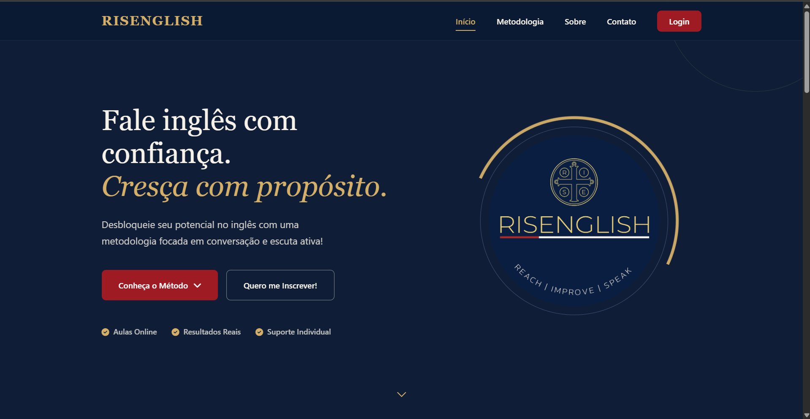

Olá, me chamo:
Jorge Pontes
Desenvolvedor Web Freelancer
Crio sistemas web sob medida de ponta a ponta. Também atuo com infraestrutura de redes e servidores (Proxmox, pfSense).

Crio sistemas web sob medida de ponta a ponta. Também atuo com infraestrutura de redes e servidores (Proxmox, pfSense).
Sistemas web que entreguei de ponta a ponta como freelancer
Sistema de gerenciamento para escolas de idiomas, com controle de turmas, agendamento e acompanhamento pedagógico.

Plataforma para venda de produtos rurais com sistema de transporte integrado. Foco em usabilidade e automação para o público agronegócio.

Plataforma de ciência cidadã para registro e catalogação de fauna e flora na Serra do Japi.

Desenvolvimento web sob medida e infraestrutura de TI
Atuo como desenvolvedor freelancer, entregando projetos completos. Já coloquei no ar sistemas cuidando de toda a stack.
Em paralelo, trabalho com infraestrutura de redes e servidores, no dia a dia com virtualização (Proxmox) e firewalls (pfSense). Acredito que a tecnologia só é eficiente quando facilita a vida das pessoas, por isso foco em automação de processos e na melhoria contínua do ambiente.
Estou no último semestre de Análise e Desenvolvimento de Sistemas pela FATEC, o que reforça minha base em programação (C#, PHP, Python) e banco de dados. Tenho inglês avançado e experiência com Git/GitHub, monitoramento (Grafana) e gestão de projetos (Trello).
Sistemas sob medida de ponta a ponta: front-end, back-end e banco de dados
Virtualização (Proxmox), firewalls (pfSense) e automação de ambientes
Inglês avançado para ambientes internacionais
Ferramentas que utilizo no dia a dia